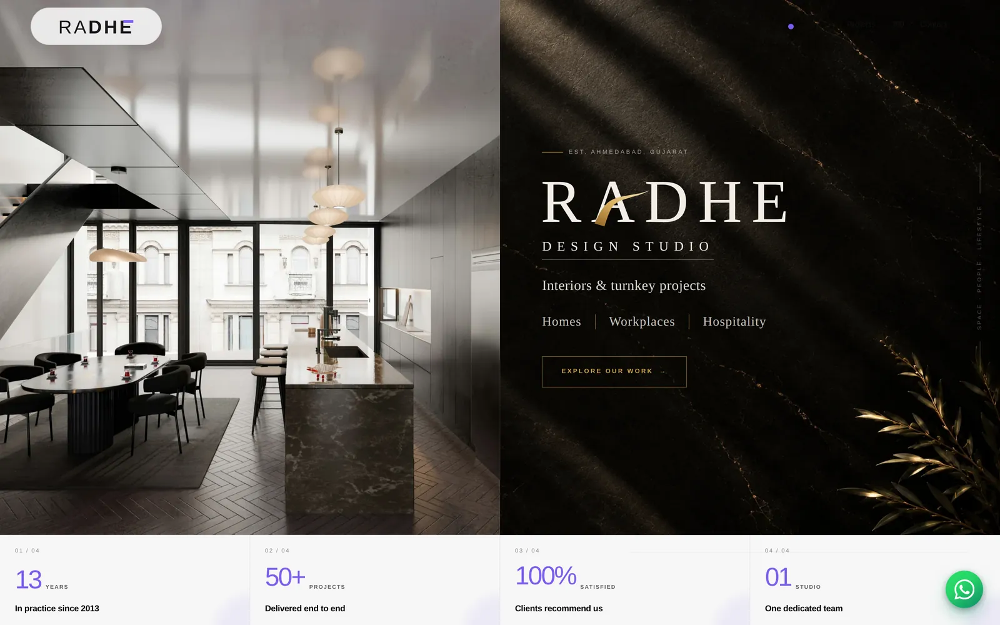
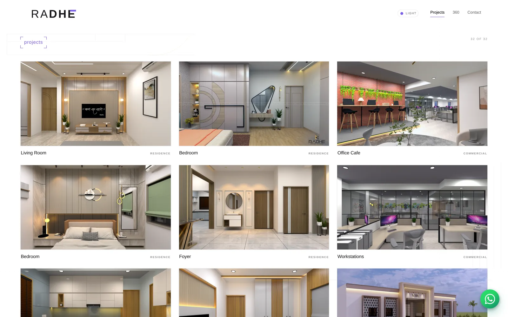
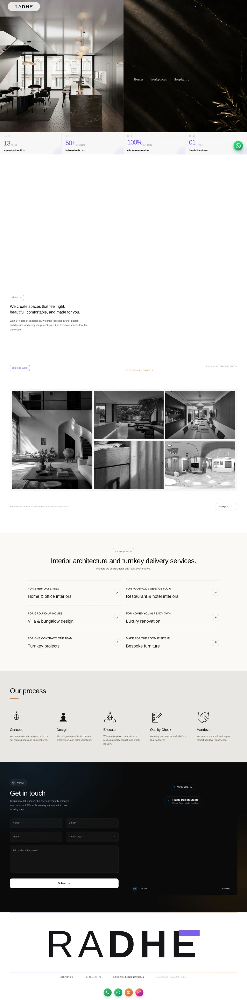

Work — Website & CRM
Radhe Design Studio
Website, 360° studio and interiors CRM. An architecture practice deserved more than a template. A drafting-sheet design system, an in-house 360° panorama viewer, and an admin CRM that tracks every fitting in every project through to handover.

- Client
- Radhe Design Studio, Ahmedabad
- Role
- Design and development, end to end
- Stack
- HTML · CSS · JavaScript · PHP · MySQL
- Status
- Live in production
The problem
An architecture and interiors practice sells judgement, and a stock template quietly says the opposite. The studio also had a second, unglamorous problem: every project carries hundreds of customisations and material decisions, from a single handle to a whole house, and they were being tracked in spreadsheets and memory.
What I built
The public site borrows its language from the studio’s own medium — a drafting-sheet design system with an animated orthogonal floor-plan layer and an AutoCAD-style crosshair on precision pointers. Section-aware blueprint canvases run behind ink and paper blocks, pause when off-screen, and hold a deliberate 30fps so they never fight the content. Scrolling stays native: requestAnimationFrame and IntersectionObserver do the work, no scroll-jacking library. Behind it, a 360° studio route runs a bundled panorama-to-depth engine with inertial drag, zoom, auto-rotation, fullscreen, keyboard control and optional gyroscope. The admin CRM runs the delivery side, tracking every customisation and material requirement project by project until handover.
Inside it
Drafting-sheet design system
Light and dark themes built from the studio’s own drawing conventions rather than a web trend.
360° studio
A Kuula-inspired route driven by a bundled panorama-to-depth engine: inertial drag and swipe, scroll and button zoom, auto-rotation, fullscreen, keyboard navigation, gyroscope, and a multi-scene thumbnail strip.
Filterable project index
Residential, hospitality, workplace and detail work, with horizontal showcases and page transitions.
Interiors CRM
An admin-only system covering every customisation and material requirement, from the smallest fitting to a complete house, tracked project-wise to handover.
Hardened enquiry endpoint
PHP handler with required-field validation, a honeypot, PDO prepared statements and email dispatch; credentials kept out of the repository.
Accessible by construction
Reduced-motion support, keyboard-visible focus states, semantic landmarks, and no horizontal overflow at any width.
Screens
Captured from the running product, not from a mockup.

